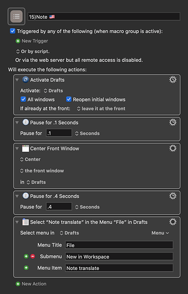

Command to create a new Drafts note anywhere on Mac?
Does this function already exist on the app itself? O r I should make use of Alfred or Keyboard Maestro to make it possible?
Any help?
Command to create a new Drafts note anywhere on Mac?
Does this function already exist on the app itself? O r I should make use of Alfred or Keyboard Maestro to make it possible?
Any help?
In Settings > General, you can set a global keyboard shortcut to invoke the Quick Capture window.
Global shortcuts work fine but for pure convenience I added ⇧ double tap in Alfred (for even quicker access in different light conditions, optional left or right hand, any finger etc.). Also, I have some other ‘double taps’ for automatic prefilling a draft.
P.S.
Mostly this works fine but sometimes pressing several command key strokes trigger Alfred, probably due to timing issues. After deleting the draft created by mistake, Drafts usually crashes. This is peculiar and a bit annoying and seems like a bug because it is reproducible. However, this is another story.
D.S.
I think - based on this thread - I’m going to set up a Stream Deck global button to do this.
So thanks for the thread.
I have no idea what you are on about.
Sorry, I (thought everyone in his thread was into Alfred and) was sloppy to explain.
Alfred is a versatile multipurpose tool where you can easily create keyboard shortcuts to trigger actions.
Now, why on earth would you want to create a keyboard shortcut in Alfred(!) for actions in Drafts when those options are already available—in Drafts?! Sounds crazy, and maybe it is but as an automization nerd I wanted the fastest, easiest and safest keystrokes to trigger my most needed and common actions regardless of external as well as internal conditions—e.g. if Drafts for some reason isn’t running.
Because of that I have reserved the space bar (with various modifiers) for Alfred, Spotlight and OmniFocus etc. What is another easy way to press any desired key, even if you are in the dark, or have only one hand free or happen to have some fingers disabled?
Well, I found out that certain strategic keys are most easy to reach and ‘know’ you are pressing, especially if the same functions is available both on the right and left side. So, e.g. next to the space bar you have the command key. The shift key is also very easy to ‘know’ you are pressing even if you cannot see. (You may ask Stevie Wonder how he finds the keys on the piano.)
One handy thing in Alfred (and even Keyboard Maestro) is that you can choose a double tap of a modifier key to trigger an action. So, analogous to language development in infants it seems one of the most primordial ways of expressing a deliberate message is to repeat a signal, e.g. ma-ma, da-da, pa-pa, la-la and so on, why I choose shift double tap (⇧⇧) for Drafts Capture and command double tap (⌘⌘) for a prefilled note for an event with the basic questions Who, How, Why, What, When, Where (actually inspired by Rudyard Kipling Kipling’s poem I Keep Six Honest Serving Men).
In most cases an ordinary shortcut works just fine but say you are extremely busy and just have to take that disturbing but important phone call. Who’s calling, why, and what is it about? Are there any legal obligations or actions I have to take after the call? Well, just double tap: ⌘⌘
Boom, I have a prefilled draft on the screen with much of the information typed already. Just take the call, fix the remaining points, fill in some tasks if necessary (which are easily found later with a Work Space for unchecked check boxes) and return to your previous work assured everything has been properly captured according the basic principles in GTD.
(The hidden secret behind this is the following keyboard shortcuts are actually defined in Drafts:
These shortcuts would be some of the most difficult combinations to type by mistake and essentially ‘useless’ why I’m saving and freeing up more useful shortcuts for other things.)
P.S.
The crashing of Drafts is beyond my control but happens repeatedly after certain actions which I simply have to avoid.
D.S.
Well I tried this and then discovered there were other shortcuts for creating notes in Drafts - and I’m running out of StreamDeck buttons… 
So the best approach is to pop up a palette - if using Keyboard Maestro. Or have qualifiers if using Alfred.
(This approach would also scale to allow templating.)
Martin, what about making use of folders and profiles? My Streamdeck switches around based on the app I’m in and where I have a lot of related options I sub group them into folders.
You’d think I would’ve thought of that, wouldn’t you?
I’ve been using profiles since I got the baby (3 x 2) one. Now I have that as well as a 5 x 3 and still I’m running out.
Way off topic but “global” button definitions are the scarcest resource of all. Which is why I tend to use the “Caps Lock Hyperkey” solution.
Hi @Lucas_Ferrer, I used Keyboard Maestro to create a sub palette with my drafts workspaces (include tags) is created.
With a BetterTouchTool gesture, I can access these system-wide.
Instead of Alfred, I use LaunchBar 6, where I just insert the AppleScript or URL of the KM macro and then I can call any workspace.
The advantage of the KM macro is that you can make changes to it at any time without affecting LaunchBar 6 / Alfred

![" data-base62-sha1="uTnaDdj8BMJvWNVTOvGALU6nOs0" width="319" height="500" srcset="../../uploads/default/optimized/2X/d/d883a3e59678bf9fc4c581a41d2adf8b3da2d8f8_2_319x500.png, ../../uploads/default/optimized/2X/d/d883a3e59678bf9fc4c581a41d2adf8b3da2d8f8_2_478x750.png 1.5x, ../../uploads/default/optimized/2X/d/d883a3e59678bf9fc4c581a41d2adf8b3da2d8f8_2_638x1000.png 2x" data-small-upload="https://forums.getdrafts.com/uploads/default/optimized/2X/d/d883a3e59678bf9fc4c581a41d2adf8b3da2d8f8_2_10x10.png">15)Note 🇺🇸 <4015 200901T002223>984×1542 126 KB](../../uploads/default/original/2X/d/d883a3e59678bf9fc4c581a41d2adf8b3da2d8f8.png){kind=link}